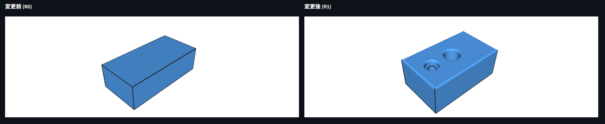
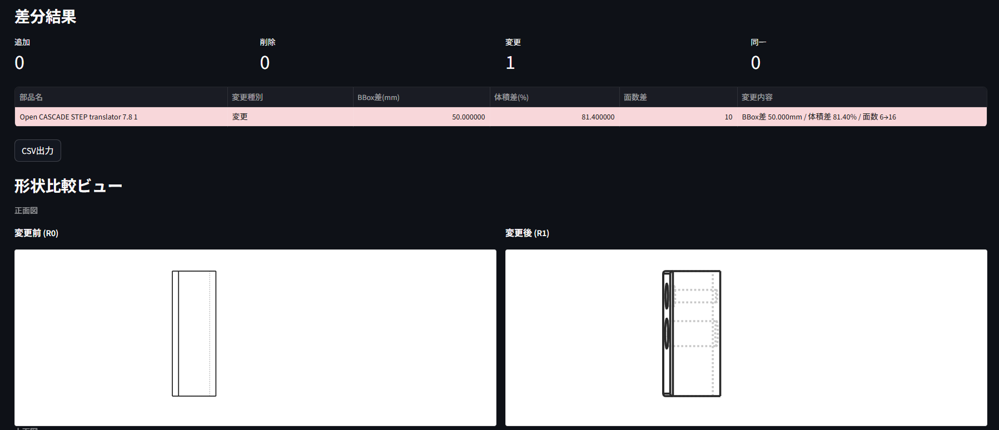
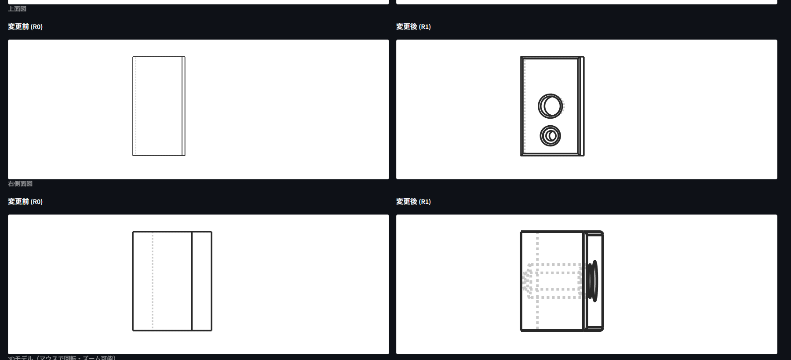

変更・追加・削除を一覧表示。BBox差、体積差、面数の変化も出る。これがメイン機能。
差分が出た部品をクリックするとブラウザ上で3D表示。回転・ズームできる。
外部通信なし。STEPは処理後に消える。社外秘でも安心して使える。
差分結果をExcelに出せる。設変記録としてそのまま使える。
他にDfM警告（薄壁・深穴の自動検出）、仕様チェック（STEPとPDFの数値突き合わせ）もあります。作り始めたら増えた。

変更・追加・削除がテーブルで一覧表示。変更前後の形状を3Dで比較できます

上面図・側面図など複数の視点で変更箇所を確認
| 対応OS | Windows 10 / 11（64bit） |
|---|---|
| インストール | 不要（exe単体で動作） |
| ネット接続 | 不要（完全ローカル動作） |
| 対応形式 | STEP（.stp / .step）、PDF（仕様チェック機能） |
| 価格 | 無料 |
| バージョン | v1.0 |
ZIPを展開して、中のexeを実行するだけ。
Windows用 · 無料 · ローカル完結
技術的な詳細はQiita記事にまとめています：
Qiita: 設変のたびに「どこ変わった？」を目視してた話使ってみて困ったこと、「こうしてほしい」があれば教えてください。